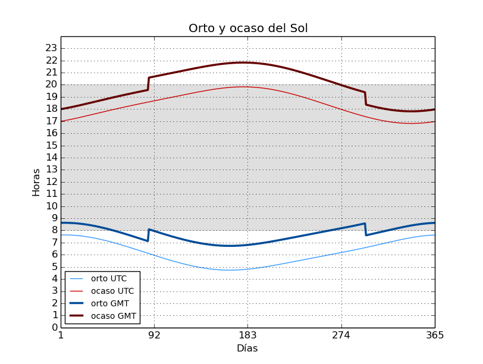

Calculando las horas de luz solar
El mes pasado comentaba al final del artículo sobre el cálculo de la altura solar que había descubierto Pyephem, una librería para generar efemérides de cuerpos celestes. Después de ojear su documentación he estado haciendo algunas pruebas y hay que reconocerle gran precisión y facilidad de uso para generar tablas con todo tipo de coordenadas.
Se me ocurrió la idea de utilizarlo para calcular las salidas y puestas del Sol y así poder calcular también el número de horas de luz durante todo el año para Madrid. De paso, introduje también la desviación horaria civil de nuestra zona horaria tomando también el cambio de hora verano/invierno. El resultado lo podéis ver en la gráfica. Es significativo la desviación entre Hora Civil y Solar sobre todo en verano, debido al debido al huso horario seguido por España, que se corresponde con Europa Central.

Ahora mismo estoy intentando dibujar posiciones de cuerpos celestes usando
coordenadas horizontales sobre el plano en una proyección esterográfica. Estoy
utilizando matplotlib y basemap pero me está costando pillarle el truco,
sobre todo al segundo. Cuando tenga algo curioso que publicar os cuento.
Mayo 2015